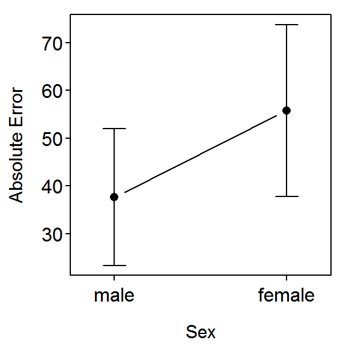

Background
Sholl et al. (2000){:target=“_blank“} examined the relative sense of direction for female and male subjects. Specifically, 30 male and 30 female subjects were taken to an unfamiliar wooded park and given spatial orientation tests, including being asked to point to the south. The absolute pointing error (in degrees away from due south) was recorded. The results are in SexDirection.csv. Use these results to test, at the 5% level, if males have a better sense of direction than females?
> setwd("C:/aaaWork/Web/GitHub/NCMTH207/modules/LMFoundations")
> sdir <- read.csv("SexDirection.csv")
> str(sdir)
'data.frame': 60 obs. of 2 variables:
$ abserr: int 13 13 38 59 58 8 130 68 23 5 ...
$ sex : Factor w/ 2 levels "female","male": 2 2 2 2 2 2 2 2 2 2 ...
> sdir$fsex <- factor(sdir$sex,levels=c("male","female"))
> levels(sdir$fsex)
[1] "male" "female"
> levels(sdir$sex)
[1] "female" "male"
Two-Sample t-Test (Traditional Method)
> hist(abserr~fsex,data=sdir,xlab="Absolute Error",breaks=seq(0,200,25),col="gray90")
> Summarize(abserr~fsex,data=sdir,digits=2)
fsex n mean sd min Q1 median Q3 max
1 male 30 37.6 38.49 3 11.50 22.5 58.75 167
2 female 30 55.8 48.26 3 15.75 35.0 88.25 176
> levenesTest(abserr~fsex,data=sdir)

Levene's Test for Homogeneity of Variance (center = median)
Df F value Pr(>F)
group 1 2.1692 0.1462
58
> t.test(abserr~fsex,data=sdir,var.equal=TRUE)
Two Sample t-test with abserr by fsex
t = -1.6149, df = 58, p-value = 0.1118
alternative hypothesis: true difference in means is not equal to 0
95 percent confidence interval:
-40.758823 4.358823
sample estimates:
mean in group male mean in group female
37.6 55.8
> t.test(abserr~sex,data=sdir,var.equal=TRUE)
Two Sample t-test with abserr by sex
t = 1.6149, df = 58, p-value = 0.1118
alternative hypothesis: true difference in means is not equal to 0
95 percent confidence interval:
-4.358823 40.758823
sample estimates:
mean in group female mean in group male
55.8 37.6
Two-Sample t-Test (As a Linear Model)
> lm1 <- lm(abserr~fsex,data=sdir)
> summary(lm1)
Coefficients:
Estimate Std. Error t value Pr(>|t|)
(Intercept) 37.600 7.969 4.718 1.54e-05
fsexfemale 18.200 11.270 1.615 0.112
Residual standard error: 43.65 on 58 degrees of freedom
Multiple R-squared: 0.04303, Adjusted R-squared: 0.02653
F-statistic: 2.608 on 1 and 58 DF, p-value: 0.1118
> confint(lm1)
2.5 % 97.5 %
(Intercept) 21.648503 53.55150
fsexfemale -4.358823 40.75882
> fitPlot(lm1,xlab="Sex",ylab="Absolute Error",main="")

> anova(lm1)
Analysis of Variance Table
Response: abserr
Df Sum Sq Mean Sq F value Pr(>F)
fsex 1 4969 4968.6 2.608 0.1118
Residuals 58 110496 1905.1